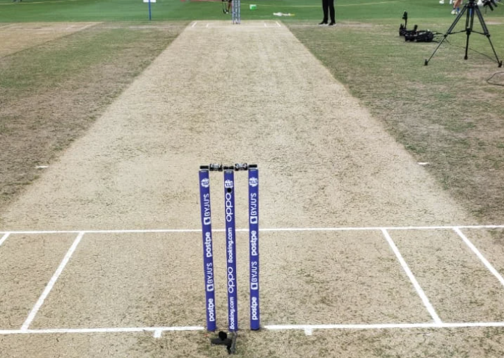
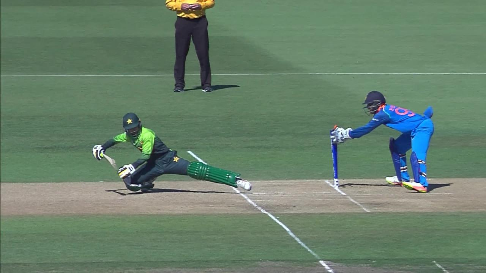
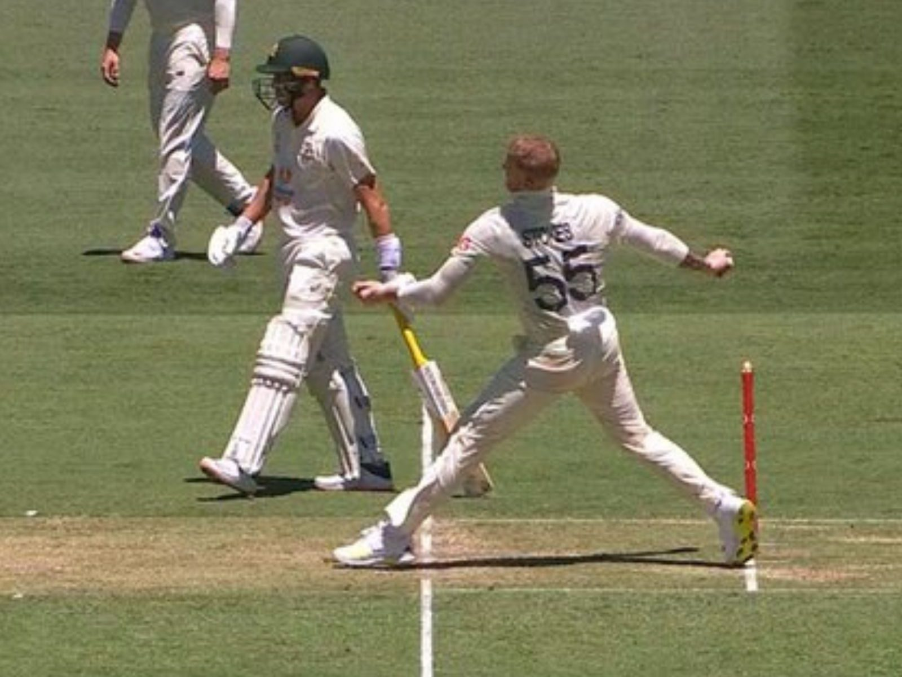

Cricket is a sport that is loved by billions of people throughout the world. This is a sport that is played everywhere in the world, from massive stadiums to small streets. No matter if you're a spectator or a participant, cricket has a way to keep the audience engaged. Australia, India and England are known as the cricketing giants. These three teams rule the cricket world. Not only do they have a rich history, but they also have a bright future ahead as they have been performing consistently at the top level.
The shape of the ground is an oval. There isn't any fixed diameter for a cricket field, but many international fields are around 140-150 meters and for womens it is set to be around 110-130 meters . The boundary is a circle which is shaped like the cricket field itself. The boundary line is made up of soft triangular prisms which shelters the rope which is set underneath. The batsmen's aim is to hit the ball over the boundaries or towards the boundary. The most famous and biggest stadium is the Narendra Modi Stadium. This is named after the PM of India.
This is the Narendra Modi Stadium :

The cricket field is an oval shaped ground, where two teams compete against each other trying to score more runs than the opposition. There are 11 players in each team, including two umpires on the field. In the center of the ground a 22 yard pitch is placed. The pitch is where the action takes place. The pitch has two wickets on each end. One wicket is called stumps and on top of that is two bails.
There are multiple lines located on the pitch (as shown in the above image). There are parallel and perpendicular lines on each side of the pitch. The batsmen use this crease to survive any moment of the game. They need to have either their bat or their shoe behind the crease in order for the batsmen to avoid a runout or being stumped by the keeper (this will be explained later). The bowler is also responsible for this part of the pitch as they must not step over the crease, or else it would be an illegal delivery.
 